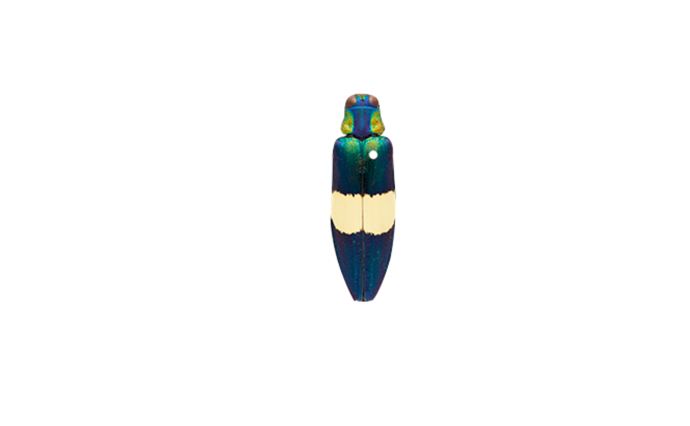
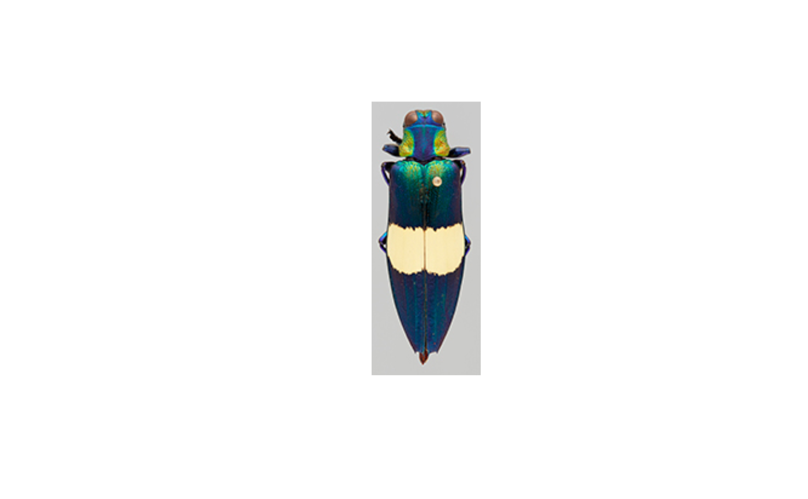

Index and remove background pixels for color clustering
Source:R/backgroundIndex.R
backgroundIndex.RdLargely internal function for identifying, indexing, and removing background pixels from an image.
Arguments
- img
An image array, preferably the output of
png::readPNG(),jpeg::readJPEG(), orlink[recolorize]{readImage}.- bg_condition
Background condition, output of
backgroundCondition().
Value
A list with the following elements:
flattened_img: The original image, flattened into a 2D matrix (rows = pixels, columns = channels).img_dims: Dimensions of the original image.non_bg: Pixels fromflattened_imgthat fall outside the background masking conditions. Used for further color clustering and analysis.idx: 2D (row-column) indices for background pixels.idx_flat: Same asidx, but flattened to vector order.
Details
This function flattens a 3-channel image into a 2D matrix before indexing and
removing background pixels to take advantage of faster indexing procedures.
The idx, idx_flat, and img_dims elements are used to reconstruct the
original and recolored images by other functions.
Examples
# get image path and read in image
img_path <- system.file("extdata/chongi.png", package = "recolorize")
img <- png::readPNG(img_path)
recolorize::plotImageArray(img)

# generate a white background condition
bg_condition <- backgroundCondition(lower = rep(0.9, 3),
upper = rep(1, 3))
# index background pixels
bg_indexed <- backgroundIndex(img, bg_condition)
# we can reconstruct the original image from the flattened array
img2 <- bg_indexed$flattened_img
dim(img2) <- bg_indexed$img_dims
# notice the original background color (light gray) now shows
recolorize::plotImageArray(img2)
